CAPITOLO 06
SEGNALETICA ORIZZONTALE
200 - 250 سؤال وزاري
دليل وقاموس الباب السادس: الإشارات الأرضية وعلامات العوائق
Segnaletica Orizzontale e Segni sugli Ostacoli
المرجع الهندسي المعتمد لكافة الدهانات والخطوط المرسومة على سطح الطريق (Carreggiata): فك شفرة الخطوط المتصلة والمتقطعة، قاعدة الخطين المتجاورين، المقارنة الفاصلة بين خط التوقف STOP وخط المثلثات، أسهم توجيه المسارات، ألوان مواقف السيارات، وحظر الجزيرة المرورية المطلية.
1. نظرة عامة وإحصائيات الباب السادس (Panoramica e Statistiche)
إجمالي الأسئلة في بنك الوزارة
Listato Ufficiale Ministeriale
- يضم بنك الأسئلة الوزاري ما بين 200 إلى 250 سؤالاً تغطي كافة دهانات الطريق وعلامات العوائق.
- تركز الأسئلة على إمكانية عبور الخط من عدمه (Valicabile / Invalicabile) والآثار القانونية للتجاوز والدوران للخلف.
نسبة التكرار والتشابه
Ripetizioni e Trabocchetti (~35%)
- تبلغ نسبة التشابه نحو 35% حيث تتكرر أسئلة الخطين المتجاورين (Strisce affiancate) وألوان مربعات الوقوف بصيغ خداعية.
- الفخ الأبرز يكمن في الزعم بجواز تخطي الخط المتصل إذا كانت الرؤية واضحة أو عدم وجود حركة مرور (Falso دائماً!).
المعيار الذهبي للامتحان
Regola d'Oro dei Quiz
- الخط المتصل جدار لا يمكن اختراقه: يمنع السير فوقه، يمنع تجاوزه، ويمنع الدوران للخلف (Inversione di marcia) فوقه نهائياً.
- الخط المتقطع يسمح بالعبور إذا تمت المناورة بأمان ودون خلق خطر أو إعاقة.
2. المحور الأول: الخطوط الطولية وقاعدة الخطين المتجاورين (Strisce Longitudinali)
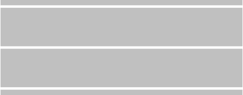
الخط الطولي المتصل الفردي
Striscia Continua Singola (Figura 501)
- غير قابل للعبور نهائياً (Invalicabile): يمنع منعاً باتاً السير فوق الخط أو تجاوزه أو حتى ملامسته بعجلات السيارة.
- حظر الدوران للخلف (Inversione di marcia vietata): لا يجوز قطعياً إجراء يو-تيرن فوق الخط المتصل حتى لو كان الشارع خالياً تماماً.
- التجاوز بدون تخطي الخط (Sorpasso senza oltrepassare): يُسمح فقط بتجاوز مركبة بطيئة (مثل دراجة) بشرط عدم ملامسة أو عبور الخط المتصل والبقاء داخل نفس الحارة.
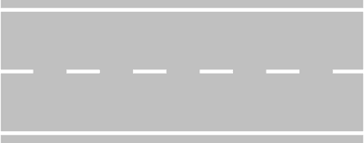
الخط الطولي المتقطع الفردي
Striscia Discontinua Singola (Figura 502)
- قابل للعبور بأمان (Valicabile): يجوز عبور الخط لإجراء مناورة التجاوز (Sorpasso) إذا توفرت شروط الرؤية والسلامة.
- جواز الدوران لليسار والخلف: يسمح بالانعطاف يساراً أو الدوران للخلف (Inversione) على الطرق ذات الاتجاهين ما لم توجد إشارة منع عمودية.
- دلالة طول الشرطات: عندما تصبح الفراغات بين الشرطات أقصر والشرطات أطول، فهذا إنذار بقرب التحول إلى خط متصل مانع للتجاوز.
🕹️ محاكي قاعدة الخطين المتجاورين (Strisce Affiancate)
Regola della Striscia più vicina al proprio senso di marcia
اختر موضع سيارتك لمعرفة الحكم القانوني الفوري وفقاً للقاعدة الذهبية: العبرة دائماً بالخط الأقرب لمسار سيارتك المباشر!
الحالة: الخط المتقطع هو الأقرب لسيارتك (Discontinua a destra del senso di marcia)
✅ الحكم القانوني: يجوز لك عبور الخط لتجاوز المركبات الأخرى أو الانعطاف أو الدوران للخلف، ويمكنك العودة لمسارك فوق الخط المتصل بعد إتمام المناورة بأمان.
📌 تطبيق عملي: توجد هذه الحالة عند الخروج من المنعطفات الصعبة أو قمم المرتفعات (Dossi) حيث تصبح الرؤية واضحة أمامك.
✅ الحكم القانوني: يجوز لك عبور الخط لتجاوز المركبات الأخرى أو الانعطاف أو الدوران للخلف، ويمكنك العودة لمسارك فوق الخط المتصل بعد إتمام المناورة بأمان.
📌 تطبيق عملي: توجد هذه الحالة عند الخروج من المنعطفات الصعبة أو قمم المرتفعات (Dossi) حيث تصبح الرؤية واضحة أمامك.
3. المحور الثاني: الخطوط العرضية وممرات المشاة والدراجات (Strisce Trasversali)
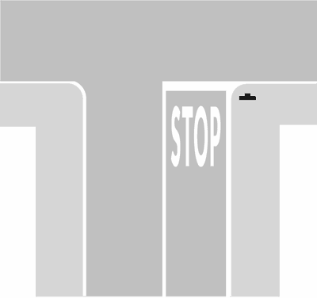
خط التوقف العرضي المتصل الإجباري
Striscia Trasversale Continua di Arresto (Figura 515)
- إلزامية التوقف التام: خط عريض متصل يفرض إيقاف المركبة بالكامل قبل تجاوزه، ولا يكفي مجرد الإبطاء.
- مواضع الاقتران: يرافق إشارة قف (STOP)، أو إشارة المرور ذات الضوء الأحمر، أو عند إشارة رجل المرور (Vigile) أو حواجز السكة الحديد.
- فخ الامتحان: يُحظر الوقوف أو تجاوز الخط بمقدمة السيارة، ويجب التوقف التام حتى لو كان التقاطع خالياً من أي مركبات أو مشاة!
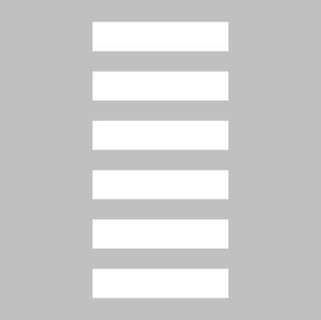
خط المثلثات العرضي (إعطاء الأسبقية)
Striscia Trasversale Discontinua con Triangoli (Figura 517)
- إعطاء الأسبقية المشروط: خط عرضي يتكون من مثلثات بيضاء رؤوسها متجهة نحو السائق القادم، يرافقه إشارة مثلث الأسبقية (Dare Precedenza).
- التوقف ليس إجبارياً: لا يلزم السائق بالتوقف التام؛ بل يجب عليه التمهل، والتوقف فقط إذا كانت هناك مركبات قادمة لها حق الأسبقية من اليمين أو اليسار.
- الفارق الجوهري: مع خط المثلثات يمكنك المرور دون توقف إذا كان الطريق خالياً، بينما مع خط STOP التوقف إلزامي حتماً!
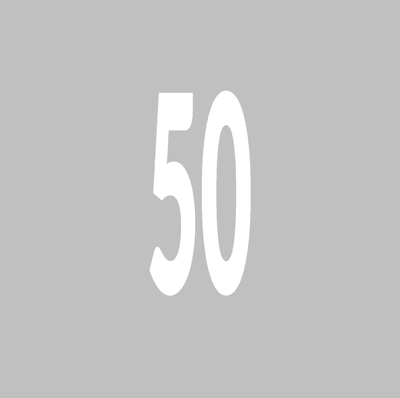
ممر المشاة (خطوط الحمار الوحشي)
Attraversamento Pedonale (Figura 528)
- خطوط بيضاء طولية موازية لمحور الطريق تعطي المشاة حق الأسبقية المطلق عند العبور.
- حظر الوقوف والتوقف: يُمنع منعاً باتاً الانتظار (Sosta) أو التوقف المؤقت (Fermata) فوق ممر المشاة أو قبله بمسافة تقل عن 5 أمتار.
- يمنع تجاوز مركبة أخرى توقفت لإفساح المجال للمشاة لعبور الطريق.
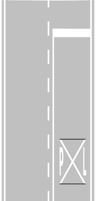
معبر الدراجات الهوائية
Attraversamento Ciclabile (Figura 531)
- خطوط بيضاء متقطعة مربعة أو مستطيلة تحدد مسار عبور راكبي الدراجات الهوائية من جانب لآخر.
- تلزم سائقي السيارات بمنح الأسبقية للدراجات الهوائية التي بدأت أو على وشك البدء في العبور.
- يمنع التوقف والوقوف فوق معابر الدراجات بنفس صرامة ممرات المشاة.
4. المحور الثالث: أسهم التوجيه، مربعات الوقوف، والجزيرة المطلية (Frecce, Stalli e Zebrature)
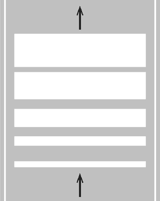
أسهم التوجيه واختيار المسار
Frecce di Incanalamento (Figura 534 / 535)
- ترشد السائق للتموضع في الحارة المناسبة قبل التقاطع (مستقيم، يمين، أو يسار).
- طالما كانت خطوط الحارات متقطعة يجوز تغيير الحارة؛ وبمجرد أن تصبح متصلة يمنع تغيير الحارة نهائياً ويجب اتباع اتجاه السهم!
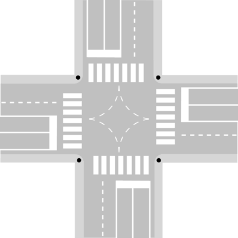
الجزيرة المرورية المطلية (Zebrature)
Isola di Traffico a Raso (Figura 543)
- خطوط بيضاء مائلة تفصل تدفقات المرور وتوجه المركبات نحو مسارات آمنة.
- حظر مطلق للمرور والوقوف: يُحظر تماماً السير فوقها (Transito vietato) أو ركن السيارة عليها (Sosta vietata) حتى لو لثوانٍ معدودة!
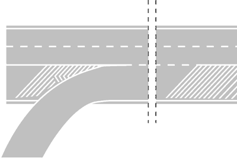
سهم العودة للمسار الأيمن
Freccia di Rientro (Figura 537)
- سهم منحني لليمين يوضح للسائق الذي يقوم بالتجاوز ضرورة العودة الفورية للمسار الأيمن.
- يدل على اقتراب انتهاء الحارة أو تحول الخط المتقطع إلى خط متصل مانع للتجاوز.
🅿️ مصفوفة ألوان مربعات ركن السيارات (Stalli di Sosta)
| لون المربع الأرضي | التصنيف القانوني (Regolamentazione) | شروط الاستخدام وأفخاخ الاختبار |
|---|---|---|
| ⚪ خطوط بيضاء (Strisce Bianche) | مواقف مجانية (Sosta Gratuita) | متاحة لجميع أنواع المركبات بدون مقابل مالي، لكنها قد تقيد بقرص الوقت (Disco orario) إذا نصت لوحة عمودية على ذلك. |
| 🔵 خطوط زرقاء (Strisce Blu) | مواقف مدفوعة الأجر (Sosta a Pagamento) | تتطلب دفع رسوم انتظار عبر تذكرة الباركومتر (Ticket) أو تطبيقات الدفع الإلكتروني، وتلزم بإبراز التذكرة على الزجاج الأمامي. |
| 🟡 خطوط صفراء (Strisce Gialle) | مواقف محجوزة حصرياً (Sosta Riservata) | مخصصة حصراً لفئات معينة: ذوي الاحتياجات الخاصة (Invalidi)، سيارات الإسعاف، التاكسي، الحافلات، أو مركبات الشحن والتفريغ. يُمنع على غير المصرح لهم الوقوف فيها كلياً! |
5. المحور الرابع: علامات العوائق والمطبات (Segni sugli Ostacoli e Rallentatori)
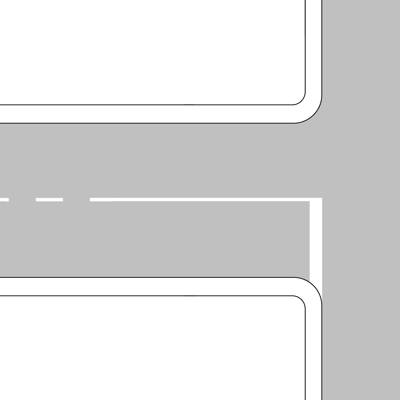
دهانات العوائق على الطريق
Segni sugli Ostacoli (Figura 563 / 565)
- خطوط مائلة باللونين الأسود والأصفر: تُدهن على الأعمدة، والأرصفة، وركائز الجسور، وحوائط الأنفاق لتنبيه السائقين لوجود عائق ثابت على جانب أو وسط الطريق.
- تهدف لتحسين الرؤية الليلية ولفت الانتباه في المسارات الضيقة لمنع الاصطدام بالعوائق الإنشائية.
- لا تعني مكان ركن للسيارات ولا تمنح أسبقية لأي طرف.
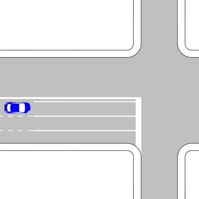
مطبات التهدئة الاصطناعية
Rallentatori di Velocità (Figura 574)
- وسائل ميكانيكية أو بصرية أو صوتية على سطح الطريق لإجبار السائقين على خفض السرعة فوراً.
- توضع بالقرب من المدارس، والمناطق السكنية، والتقاطعات الخطرة، وممرات المشاة الحيوية.
- تتطلب التمهل الشديد لتفادي فقدان السيطرة على المركبة أو إتلاف نظام التعليق والمساعدين.
6. قاموس المصطلحات الفنية الـ 11 الحاكمة (Dizionario Tecnico)
| المصطلح الإيطالي (Termine) | الترجمة العربية الدقيقة | الشرح العملي وموضع الفخ في أسئلة الامتحان الوزاري |
|---|---|---|
| Striscia continua | خط متصل | خط طولي لا يمكن عبوره أو ملامسته نهائياً (Invalicabile)، ويمنع الدوران للخلف. |
| Striscia discontinua | خط متقطع | خط طولي يسمح بعبوره لإجراء التجاوز والدوران للخلف إذا كانت شروط الأمان متوفرة. |
| Strisce affiancate | خطان متجاوران | خط متصل بجوار خط متقطع؛ الحكم والقاعدة تتبع دائماً الخط الأقرب لجهة سير مركبتك. |
| Inversione di marcia | الدوران للخلف (يو تيرن) | مناورة لتغيير اتجاه السير 180 درجة، ومحظورة كلياً فوق الخط المتصل أو خطوط المشاة. |
| Striscia di arresto | خط التوقف العرضي المتصل | يفرض التوقف التام عند علامة STOP أو الإشارة الحمراء دون تجاوز الخط بمقدمة السيارة. |
| Striscia con triangoli | خط المثلثات العرضي | يفرض إعطاء الأسبقية، والتوقف عنده غير إلزامي إلا إذا كانت هناك سيارات قادمة بالفعل. |
| Frecce di incanalamento | أسهم التوجيه والتموضع | تحدد المسار المطلوب للحارة، وتلزم بالاستمرار في نفس الاتجاه فور تحول الخط لمتصل. |
| Stalli di sosta | مربعات ركن السيارات | مساحات محددة بدهانات أرضية: بيضاء للمجاني، زرقاء للمدفوع، وصفراء للمحجوز. |
| Zebrature / Isola a raso | الجزيرة المرورية المطلية | خطوط بيضاء مائلة تفصل المسارات؛ يحظر قطعياً السير أو الوقوف فوقها نهائياً. |
| Rallentatori di velocità | مطبات التهدئة الاصطناعية | مطبات على سطح الطريق لإجبار السائقين على الإبطاء قرب المدارس والتقاطعات. |
| Bordi della carreggiata | خطوط حافة نهر الطريق | خطوط تفصل نهر الطريق عن كتف الطريق (Banchina) أو الممرات الجانبية. |
7. فخاخ الامتحان الوزارية الـ 9 المعتمدة (Trappole dei Quiz)
اختبر فهمك الفوري لأخطر الأسئلة الوزارية التي تتكرر باستمرار في اختبارات Patente B الرسمية للباب السادس:
1. La striscia bianca continua che divide la carreggiata in due corsie può essere oltrepassata durante un sorpasso, se non sopraggiungono veicoli in senso opposto.
1. الخط الأبيض المتصل الذي يقسم نهر الطريق إلى حارتين يجوز تجاوزه وعبوره أثناء مناورة التجاوز إذا لم تكن هناك مركبات قادمة في الاتجاه المعاكس.
الإجابة: FALSO ❌
التعليل القانوني: الخط المتصل غير قابل للعبور نهائياً (Invalicabile) تحت أي ظرف! لا يجوز عبوره أو ملامسته حتى لو كان الطريق خالياً تماماً ومجال الرؤية مفتوحاً لعدة كيلومترات.
التعليل القانوني: الخط المتصل غير قابل للعبور نهائياً (Invalicabile) تحت أي ظرف! لا يجوز عبوره أو ملامسته حتى لو كان الطريق خالياً تماماً ومجال الرؤية مفتوحاً لعدة كيلومترات.
2. In presenza di due strisce continue e discontinue affiancate, il conducente deve rispettare la striscia più vicina al proprio senso di marcia.
2. عند وجود خطين متجاورين أحدهما متصل والآخر متقطع، يجب على السائق الالتزام بالخط الأقرب لمسار سيره المباشر.
الإجابة: VERO ✅
التعليل القانوني: هذه هي القاعدة الحاكمة: إذا كان الخط الأقرب لمركبتك متقطعاً، يجوز لك العبور والتجاوز؛ وإذا كان الأقرب متصلاً، يمنع عليك العبور.
التعليل القانوني: هذه هي القاعدة الحاكمة: إذا كان الخط الأقرب لمركبتك متقطعاً، يجوز لك العبور والتجاوز؛ وإذا كان الأقرب متصلاً، يمنع عليك العبور.
3. La striscia trasversale continua di arresto obbliga il conducente a fermarsi solo se ci sono pedoni che attraversano.
3. خط التوقف العرضي المتصل يلزم السائق بالتوقف فقط إذا كان هناك مشاة يعبرون الطريق.
الإجابة: FALSO ❌
التعليل القانوني: خط التوقف المتصل يفرض التوقف التام حتماً عند وجود علامة STOP أو إشارة ضوئية حمراء أو أمر الشرطي، بصرف النظر تماماً عن وجود مشاة أو خلو التقاطع.
التعليل القانوني: خط التوقف المتصل يفرض التوقف التام حتماً عند وجود علامة STOP أو إشارة ضوئية حمراء أو أمر الشرطي، بصرف النظر تماماً عن وجود مشاة أو خلو التقاطع.
4. La striscia trasversale discontinua formata da una serie di triangoli indica che bisogna dare la precedenza ai veicoli che transitano sulla strada che si incrocia.
4. خط التوقف العرضي المتقطع المكون من سلسلة مثلثات يدل على وجوب إعطاء الأسبقية للمركبات التي تسير على الطريق المتقاطع.
الإجابة: VERO ✅
التعليل القانوني: هذا الخط يمثل علامة إعطاء الأسبقية الأرضية (Dare Precedenza)؛ يفرض التمهل ومنح الأسبقية لليمين واليسار، والتوقف مشروط بقدوم مركبات.
التعليل القانوني: هذا الخط يمثل علامة إعطاء الأسبقية الأرضية (Dare Precedenza)؛ يفرض التمهل ومنح الأسبقية لليمين واليسار، والتوقف مشروط بقدوم مركبات.
5. Sull'isola di traffico dipinta sulla carreggiata (zebratura) è consentita la sosta dei veicoli per brevi periodi.
5. فوق الجزيرة المرورية المطلية على قارعة الطريق (الخطوط المائلة Zebratura) يُسمح بركن وانتظار المركبات لفترات قصيرة.
الإجابة: FALSO ❌
التعليل القانوني: الجزيرة المرورية المطلية محظور كلياً السير فوقها (Transito vietato) أو الوقوف عليها (Sosta vietata) حتى لو لثوانٍ معدودة لتفادي إرباك وفصل تدفقات المرور.
التعليل القانوني: الجزيرة المرورية المطلية محظور كلياً السير فوقها (Transito vietato) أو الوقوف عليها (Sosta vietata) حتى لو لثوانٍ معدودة لتفادي إرباك وفصل تدفقات المرور.
6. Gli stalli di sosta delimitati da strisce gialle possono essere utilizzati da tutti i veicoli se la sosta non supera i 30 minuti.
6. مربعات ركن السيارات المحددة بخطوط صفراء يجوز استخدامها من قبل جميع المركبات إذا لم تتجاوز مدة الوقوف 30 دقيقة.
الإجابة: FALSO ❌
التعليل القانوني: الخطوط الصفراء مخصصة حصراً لفئات معينة مصرح لها (مثل ذوي الاحتياجات الخاصة، الإسعاف، الحافلات، التاكسي)؛ ولا يجوز للمركبات العادية الوقوف فيها مهما قصرت المدة.
التعليل القانوني: الخطوط الصفراء مخصصة حصراً لفئات معينة مصرح لها (مثل ذوي الاحتياجات الخاصة، الإسعاف، الحافلات، التاكسي)؛ ولا يجوز للمركبات العادية الوقوف فيها مهما قصرت المدة.
7. Le frecce direzionali tracciate sulla carreggiata invitano i conducenti a incanalarsi nella corsia destinata alla direzione scelta.
7. أسهم التوجيه المرسومة على سطح الطريق تدعو السائقين إلى التموضع في الحارة المخصصة للاتجاه المختار.
الإجابة: VERO ✅
التعليل القانوني: تسمى (Frecce di incanalamento) ووظيفتها مساعدة السائقين على اختيار الحارة الصحيحة مبكراً قبل أن تفصل الحارات خطوط متصلة تلزمهم باتباع الاتجاه.
التعليل القانوني: تسمى (Frecce di incanalamento) ووظيفتها مساعدة السائقين على اختيار الحارة الصحيحة مبكراً قبل أن تفصل الحارات خطوط متصلة تلزمهم باتباع الاتجاه.
8. Una carreggiata divisa da una doppia striscia continua è sempre a senso unico di circolazione.
8. نهر الطريق المفصول بخط مزدوج متصل يكون دائماً في اتجاه واحد للسير (Senso unico).
الإجابة: FALSO ❌
التعليل القانوني: الخط المزدوج المتصل يفصل بين اتجاهين متعاكسين للسير (Doppio senso) في الطرق العريضة المكونة من حارتين على الأقل لكل اتجاه، ولا يوضع في الطرق ذات الاتجاه الواحد.
التعليل القانوني: الخط المزدوج المتصل يفصل بين اتجاهين متعاكسين للسير (Doppio senso) في الطرق العريضة المكونة من حارتين على الأقل لكل اتجاه، ولا يوضع في الطرق ذات الاتجاه الواحد.
9. È vietata la fermata e la sosta sulle strisce pedonali e a meno di 5 metri da esse.
9. يُحظر الوقوف والتوقف المؤقت فوق خطوط ممرات المشاة وعلى مسافة تقل عن 5 أمتار منها.
الإجابة: VERO ✅
التعليل القانوني: الوقوف والتوقف محظوران تماماً فوق ممر المشاة وقبله بـ 5 أمتار للحفاظ على زاوية الرؤية وحماية المشاة العابرين من خطر الاصطدام المفاجئ.
التعليل القانوني: الوقوف والتوقف محظوران تماماً فوق ممر المشاة وقبله بـ 5 أمتار للحفاظ على زاوية الرؤية وحماية المشاة العابرين من خطر الاصطدام المفاجئ.